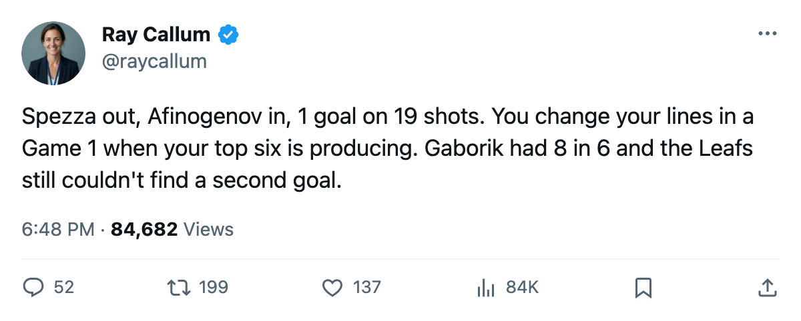

RECAP: Pittsburgh 3, Toronto 1 — Hedberg holds, and the line shuffle didn't help
The 7th-seeded Penguins scored 3 on 28 shots at the Air Canada Centre to take a 1-0 lead in the second round.
 Ray CallumSenior correspondent · Home Ice Network
Ray CallumSenior correspondent · Home Ice Network
 Johan Hedberg87 made the save that mattered and the
Johan Hedberg87 made the save that mattered and the  Pittsburgh Penguins scored 3 on 28 shots in Toronto on Thursday to take a 1-0 lead in the Eastern Conference second round.
Pittsburgh Penguins scored 3 on 28 shots in Toronto on Thursday to take a 1-0 lead in the Eastern Conference second round.
The Maple Leafs managed 1 goal on 19 shots. Hedberg's postseason line now reads 4-2, 1.83 GAA, .913 save percentage, and that figure includes tonight.
Toronto made a lineup change for the opener.  Jason Spezza72 was scratched, and
Jason Spezza72 was scratched, and  Maxim Afinogenov86 dressed at left wing on the second line.
Maxim Afinogenov86 dressed at left wing on the second line.  Rick Nash83 slid down to the third line. The shuffle produced 1 goal on 19 shots against a goaltender who has been sharp all spring.
Rick Nash83 slid down to the third line. The shuffle produced 1 goal on 19 shots against a goaltender who has been sharp all spring.
 Mario Lemieux88 leads all scorers this postseason with 8 points in 7 games. Eric Meloche77 is one point back with 5 goals and 7 points.
Mario Lemieux88 leads all scorers this postseason with 8 points in 7 games. Eric Meloche77 is one point back with 5 goals and 7 points.  Shane Willis74 has 4 in 7, as does
Shane Willis74 has 4 in 7, as does  Martin Straka85. Four forwards producing in front of a hot goaltender is how a 7th seed beats a 1st.
Martin Straka85. Four forwards producing in front of a hot goaltender is how a 7th seed beats a 1st.
What the numbers say
 Toronto Maple Leafs finished the regular season 59-13-5, 133 points, 381 goals for, 190 against. Their home record was 33-8. They were 4-1-0 against Pittsburgh this regular season, outscoring them 21-12 across five meetings.
Toronto Maple Leafs finished the regular season 59-13-5, 133 points, 381 goals for, 190 against. Their home record was 33-8. They were 4-1-0 against Pittsburgh this regular season, outscoring them 21-12 across five meetings.
Pittsburgh Penguins finished 24-34-11, 85 points. Their road record was 19-22. They lost 61 designated injury spells this season, more than any other club. They have won 4 of 7 postseason games with two goaltenders splitting the work.
Pittsburgh scored 3, Toronto scored 1, and the series moves to Game 2 in Toronto on 2005-04-24.
 Roberto Luongo94's postseason numbers were, going into tonight, 4-2 with a 1.68 GAA and a .954 save percentage. Toronto's top scorer this spring,
Roberto Luongo94's postseason numbers were, going into tonight, 4-2 with a 1.68 GAA and a .954 save percentage. Toronto's top scorer this spring,  Marian Gaborik98, has 8 points in 6 games. He needs a Game 2.
Marian Gaborik98, has 8 points in 6 games. He needs a Game 2.
